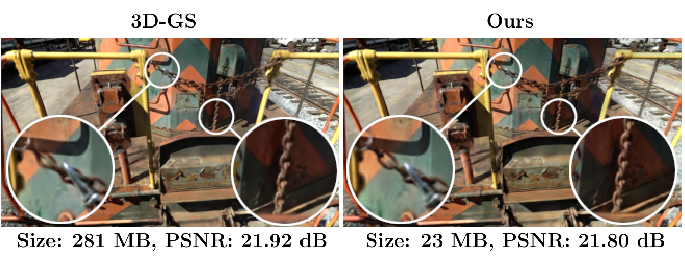
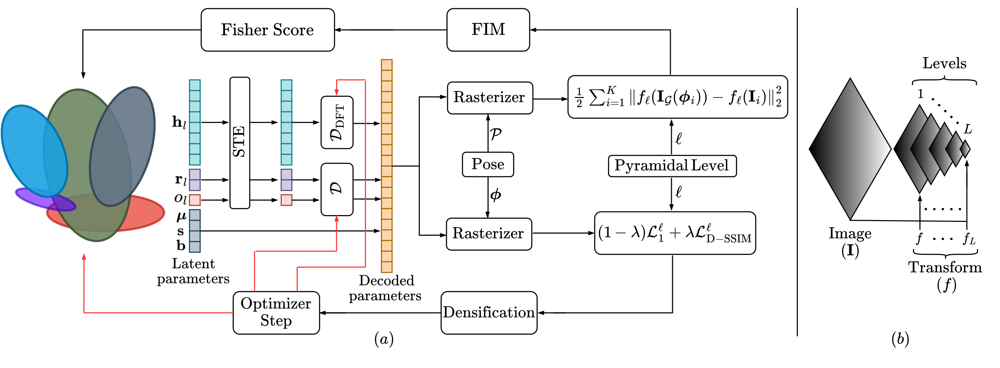
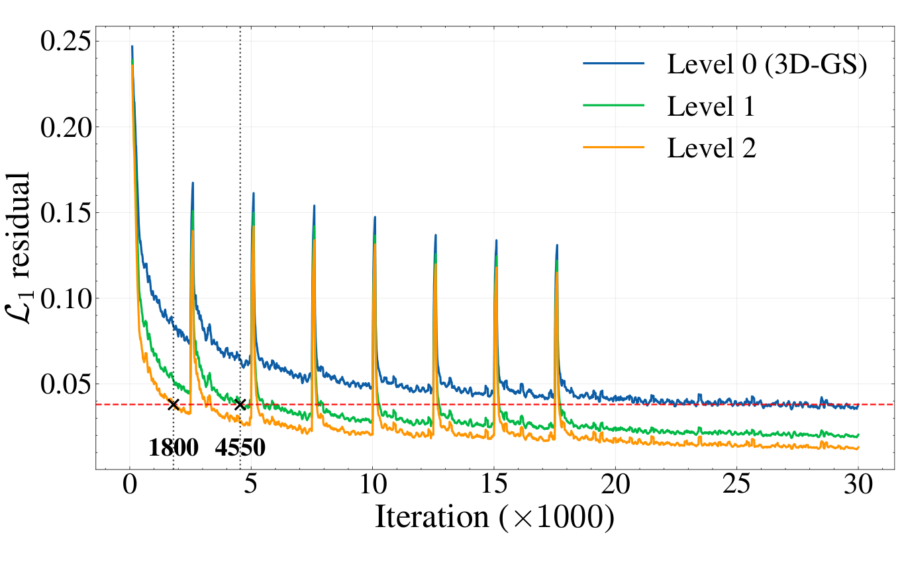
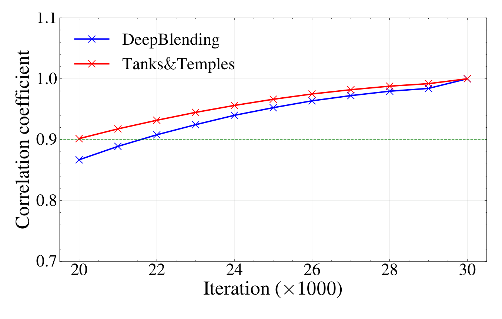

Making Fisher Work: Train-Time Compression
for 3D Gaussian Splatting
Comprimir mientras se entrena, no después
P G Arun Madhav · Chandra Sekhar Seelamantula
Department of Electrical Engineering, Indian Institute of Science, Bangalore · ICIP 2026
Presentación de paper — Francisco Alfaro Medina
Doctorado en Ingeniería Electrónica · Universidad Técnica Federico Santa María
El problema: calidad en tiempo real, a un costo de almacenamiento enorme

Escena train de Tanks&Temples: 281 MB → 23 MB, un 92,24 % de compresión, con una caída de PSNR de apenas 0,12 dB (Fig. 1 del paper).
- 3D-GS [1] logra síntesis de vistas nuevas de alta calidad con renderizado en tiempo real.
- Pero una reconstrucción de calidad necesita millones de primitivas gaussianas.
- El resultado: mucha memoria y una huella de almacenamiento enorme.
- Es eficiente en inferencia y poco escalable en almacenamiento: ese es el cuello de botella para desplegarlo.
El problema
La redundancia se forma durante el entrenamiento
Qué hay exactamente que comprimir
Cada escena es un conjunto de primitivas gaussianas 3D:
\[G = \{G_i = \{\mu_i, s_i, r_i, b_i, h_i, o_i\}\}_{i=1}^{N}\]
| Parámetro | Dimensión | Rol |
|---|---|---|
| \(\mu_i\) | \(\mathbb{R}^3\) | centro |
| \(s_i\) | \(\mathbb{R}^3\) | escala |
| \(r_i\) | \(\mathbb{R}^4\) | rotación |
| \(b_i\) | \(\mathbb{R}^3\) | color base |
| \(h_i\) | \(\mathbb{R}^{15\times 3}\) | armónicos esféricos (SH) |
| \(o_i\) | \(\mathbb{R}\) | opacidad |
Un rasterizador diferenciable proyecta las primitivas desde la pose \(\phi\) y produce \(I_G(\phi)\), optimizada con:
\[L = (1-\lambda)\,L_1 + \lambda\,L_{\text{D-SSIM}}, \qquad \lambda = 0{,}2\]
Geometría — posición, escala y rotación ubican y orientan cada gaussiana anisotrópica en el espacio 3D.
Apariencia — el color base y los SH modelan la radiancia dependiente del punto de vista.
Dónde está el presupuesto
Con grado cúbico de SH, los coeficientes \(h_i\) concentran más del 80 % del presupuesto de almacenamiento por gaussiana.
Trabajo previo: por qué no basta
| Método | Idea principal | Limitación para comprimir en entrenamiento |
|---|---|---|
| Compact 3D-GS [4] | Códigos latentes discretos aprendidos | Trata de forma genérica parámetros heterogéneos |
| EAGLES [5] | Representación multiescala + poda | No regula la introducción de detalle |
| LightGaussian [6] | Puntaje de significancia global + baja precisión | Poda y cuantiza después de que la redundancia se formó |
| PUP 3D-GS [7] | Puntaje de sensibilidad por Hessiano / Fisher | Principiado, pero solo aplicable cerca de la convergencia |
La brecha. Los métodos existentes preguntan ¿qué primitivas se pueden eliminar?. Este trabajo agrega la pregunta que faltaba: ¿cuándo hay que dejar que aparezca la redundancia? Podar temprano es inestable, porque la optimización temprana todavía no decidió qué primitivas son necesarias.
El método
Estabilizar, medir importancia, asignar bits
El framework en tres piezas
1 · Entrenamiento piramidal progresivo (PPT)
Supervisar la escena de grueso a fino: la estructura global se estabiliza antes de que llegue el detalle de alta frecuencia.
Lleva la optimización a un régimen de residual \(L_1\) bajo en los niveles gruesos.
2 · Poda basada en la FIM
Un puntaje de sensibilidad por gaussiana, derivado de la matriz de información de Fisher, ordena las primitivas por importancia.
El régimen de residual bajo es lo que vuelve confiable ese puntaje durante el entrenamiento.
3 · Cuantización consciente de la correlación (CAQ)
Decodificadores por grupo de parámetros: latentes escalares para los decorrelacionados, base DFT para los SH.
Gasta bits donde efectivamente hay estructura que explotar.
Las tres se combinan en un único lazo de entrenamiento y logran 95 % de reducción promedio de almacenamiento preservando la calidad del renderizado.
El lazo de entrenamiento, de punta a punta

- Lazo que combina decodificación de latentes, rasterización, supervisión piramidal y puntaje de Fisher. (b) Formación de la pirámide con la transformación \(f\) a lo largo de \(L\) niveles (Fig. 2 del paper).
PPT: primero estabilizar, después el detalle
La pirámide se construye con suavizado gaussiano seguido de submuestreo:
\[f: \mathbb{R}^{H\times W}\rightarrow\mathbb{R}^{\frac{H}{2}\times\frac{W}{2}}, \qquad f_\ell = \underbrace{f\circ f\circ\cdots\circ f}_{\ell\text{ veces}}, \qquad L_\ell = (1-\lambda)L_1^\ell + \lambda L_{\text{D-SSIM}}^\ell\]
Nivel 2 · el más grueso
Iteraciones 0 – 5.000
Estructura global, paisaje de pérdida suave, residual muy bajo.
Nivel 1 · intermedio
Iteraciones 5.000 – 10.000
Se introduce detalle intermedio de forma gradual.
Nivel 0 · resolución completa
Iteraciones 10.000 – 30.000
Detalle fino de apariencia sobre un conjunto ya depurado.
Ojo con esto
La pirámide cambia la supervisión, no el objetivo final: el modelo se sigue evaluando a resolución completa.
El residual bajo es lo que habilita todo

Residual \(L_1\) por iteración para los tres niveles. La línea roja punteada es el residual de un 3D-GS ya convergido (Fig. 3 del paper).
- El nivel 2 baja del residual del 3D-GS convergido en la iteración 1.800; el nivel 1, en la 4.550.
- Es decir: el régimen que PUP solo alcanza al converger (30k iteraciones) aquí está disponible casi desde el principio.
- Los picos periódicos son los eventos de densificación: cada uno inyecta primitivas nuevas y vuelve a subir el residual.
- Con el residual bajo, los términos de segundo orden que dependen del residual se vuelven despreciables → la aproximación del Hessiano es utilizable.
De la sensibilidad de Fisher a un puntaje escalar
Derivando dos veces el error de reconstrucción \(L_2\) bajo supervisión piramidal y aplicando la regla de la cadena, en el régimen de residual bajo el segundo término se anula:
\[\nabla_G^2 L_2 \approx \sum_{i=1}^{K} J_{f_\ell}\,\nabla_G I_G(\phi_i)\,\nabla_G I_G(\phi_i)^\top J_{f_\ell}^{\top}\]
Restringiendo al bloque diagonal de cada gaussiana \(G_j\) y resumiéndolo con el log-determinante:
\[H_j = \sum_{i=1}^{K} J_{f_\ell}\,\nabla_{G_j} I_G(\phi_i)\,\nabla_{G_j} I_G(\phi_i)^\top J_{f_\ell}^{\top}, \qquad U_j = \log|H_j|\]
\(U_j\) alto — las imágenes renderizadas son sensibles a perturbar \(G_j\) → se conserva.
\(U_j\) bajo — la primitiva aporta poco bajo la supervisión actual → candidata a poda.
Dos regímenes de poda
Poda piramidal
- Se puntúa bajo el nivel piramidal vigente y se eliminan las gaussianas de baja sensibilidad antes de pasar a supervisión más fina.
- Actúa como mecanismo de regularización: evita que la redundancia formada en niveles gruesos se propague y sesgue la optimización de escala fina.
- Al reducir el conjunto efectivo de optimización, también mejora la eficiencia del entrenamiento.
Poda iterativa
- Cada 3.000 iteraciones, entre la 21.000 y la 27.000.
- Se apoya en la estabilidad temporal de los rankings cerca de la convergencia.

Correlación de rangos de Spearman entre el ranking de sensibilidad en cada iteración y el de un 3D-GS totalmente convergido (Fig. 4 del paper).
La idea clave
El puntaje no necesita ser perfecto en la iteración 0: necesita ser confiable antes de cada decisión de poda.
CAQ: gastar bits donde hay estructura
El problema de la cuantización genérica
Los parámetros de una gaussiana no comparten estadísticas. Un único cuantizador aplicado de forma uniforme desperdicia capacidad en grupos con estructuras de correlación distintas.
Importante
Los coeficientes SH dominan el almacenamiento y exhiben fuerte correlación entre canales, inducida por su estructura en el dominio de la frecuencia.
| Grupo | Decodificador | Justificación |
|---|---|---|
| Rotación \(r\), opacidad \(o\) | Lineal compacto \(D\) | Están decorrelacionados → bastan latentes escalares |
| Coeficientes SH \(h\) | Basado en DFT, \(D_{\mathrm{DFT}}\) | La base de frecuencia explota la correlación entre canales |
\[h = D_{\mathrm{DFT}}(\operatorname{STE}(h^\ell)), \qquad r, o = D(\operatorname{STE}(r^\ell, o^\ell))\]
El estimador de paso directo (STE) discretiza en el paso hacia adelante y preserva el flujo de gradiente hacia atrás: latentes y decodificadores se optimizan junto con el 3D-GS.
Después del entrenamiento: los latentes continuos se discretizan, se codifican por entropía y se almacenan junto con sus decodificadores.
La evidencia
Tres benchmarks y una ablación
Resultados sobre tres benchmarks
| Método | Mip-NeRF 360 | Tanks&Temples | Deep Blending | |||||||||
|---|---|---|---|---|---|---|---|---|---|---|---|---|
| PSNR↑ | SSIM↑ | LPIPS↓ | MB↓ | PSNR↑ | SSIM↑ | LPIPS↓ | MB↓ | PSNR↑ | SSIM↑ | LPIPS↓ | MB↓ | |
| 3D-GS [1] | 27.44 | 0.813 | 0.218 | 822.6 | 23.67 | 0.844 | 0.179 | 452.4 | 29.48 | 0.900 | 0.246 | 692.5 |
| Compact [4] | 26.95 | 0.797 | 0.244 | 26.31 | 23.33 | 0.831 | 0.202 | 18.97 | 29.71 | 0.901 | 0.257 | 25.75 |
| EAGLES [5] | 27.07 | 0.801 | 0.240 | 59.49 | 23.14 | 0.833 | 0.203 | 30.18 | 29.72 | 0.906 | 0.249 | 54.45 |
| LightGaussian [6] | 26.90 | 0.800 | 0.240 | 53.96 | 23.32 | 0.829 | 0.204 | 29.94 | 29.12 | 0.895 | 0.262 | 45.25 |
| PUP [7] | 26.67 | 0.786 | 0.271 | 74.65 | 22.72 | 0.801 | 0.244 | 43.37 | 28.85 | 0.881 | 0.301 | 69.98 |
| Propuesto | 27.01 | 0.801 | 0.239 | 32.78 | 23.38 | 0.837 | 0.202 | 23.93 | 29.87 | 0.912 | 0.248 | 30.07 |
≈95 % reducción promedio de almacenamiento
+0,39 dB PSNR en Deep Blending: supera al 3D-GS original
25× modelo más liviano que 3D-GS en Mip-NeRF 360
Ablación: qué aporta cada componente
| Configuración | PSNR↑ | SSIM↑ | LPIPS↓ | Primitivas↓ | MB↓ |
|---|---|---|---|---|---|
| 3D-GS base | 32.25 | 0.946 | 0.181 | 1,25 M | 294.55 |
| + CAQ | 31.36 | 0.937 | 0.216 | 0,98 M | 44.22 |
| + PPT | 31.35 | 0.936 | 0.216 | 0,80 M | 36.82 |
| + Poda piramidal (PP) | 30.94 | 0.933 | 0.219 | 0,66 M | 30.88 |
| + Poda iterativa (IP) | 30.91 | 0.932 | 0.224 | 0,33 M | 15.24 |
| Propuesto (completo) | 30.92 | 0.932 | 0.224 | 0,33 M | 15.28 |
Ablación sobre la escena bonsai de Mip-NeRF 360 (Tabla 2 del paper).
- CAQ produce la primera gran caída: 294,55 → 44,22 MB (85 %) con un costo moderado de calidad.
- PPT y las dos podas ya no atacan los bits por primitiva, sino cuántas primitivas sobreviven: 1,25 M → 0,33 M.
- La poda iterativa es la que más primitivas elimina (0,66 M → 0,33 M) por apenas 0,03 dB de PSNR.
- El modelo final conserva solo el 26,4 % de las primitivas del base, con 19× menos almacenamiento.
Conclusiones
Lo que el paper establece
- La supervisión piramidal progresiva crea un régimen de residual bajo desde la iteración ~1.800, en vez de esperar la convergencia.
- Eso vuelve confiables los puntajes de Fisher durante el entrenamiento, y con ellos la poda deja de ser un post-proceso.
- Los decodificadores estructurados explotan las correlaciones distintas de SH, rotación y opacidad.
- El framework unificado logra ≈95 % de reducción preservando la calidad de renderizado.
Límites y preguntas abiertas
- Limitación declarada: se asume que la supervisión en niveles gruesos produce residuales suficientemente pequeños para que la aproximación FIM sea válida.
- Los cronogramas (5k / 10k, poda cada 3k entre 21k y 27k) son fijos y empíricos: ¿pueden adaptarse al contenido?
- ¿Qué bases aprendidas superarían al decodificador DFT?
- No se reporta en el paper principal el efecto sobre velocidad de renderizado ni tiempo de entrenamiento (van al material suplementario).
Idea para llevarse: la compresión confiable empieza por moldear la trayectoria de optimización, después medir importancia y recién entonces asignar bits según la estructura. El cuándo importa tanto como el operador de compresión.
Gracias
¿Preguntas?
P. G. Arun Madhav y C. S. Seelamantula, “Making Fisher Work: Train-Time Compression for 3D Gaussian Splatting”
IEEE ICIP 2026 · DOI 10.1109/ICIP61757.2026.11630029
Francisco Alfaro Medina · Universidad Técnica Federico Santa María
https://github.com/fralfaro/talks

ICIP 2026 · Making Fisher Work: Train-Time Compression for 3D Gaussian Splatting